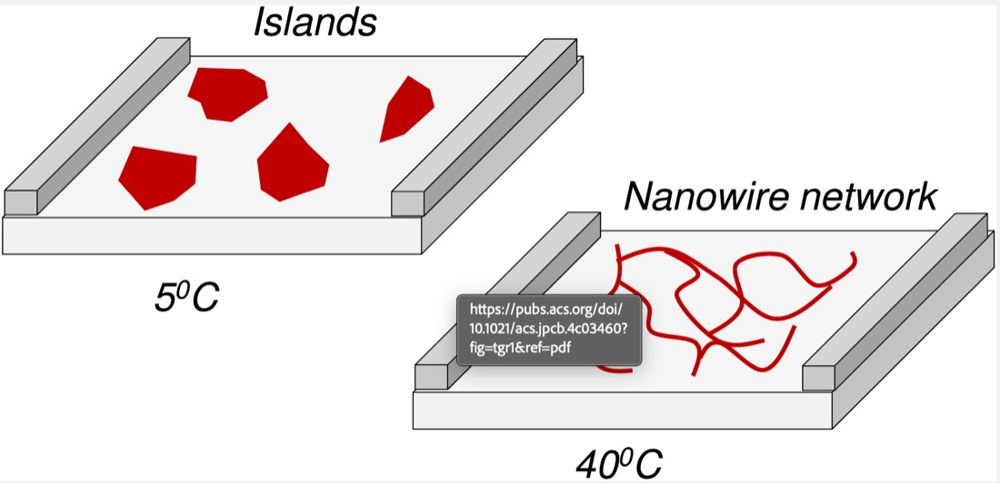
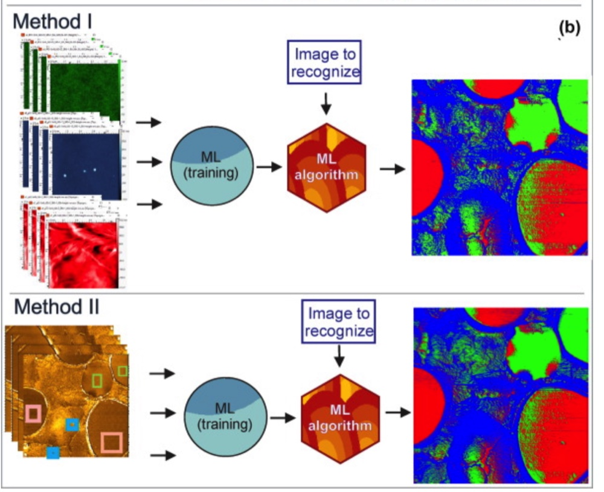
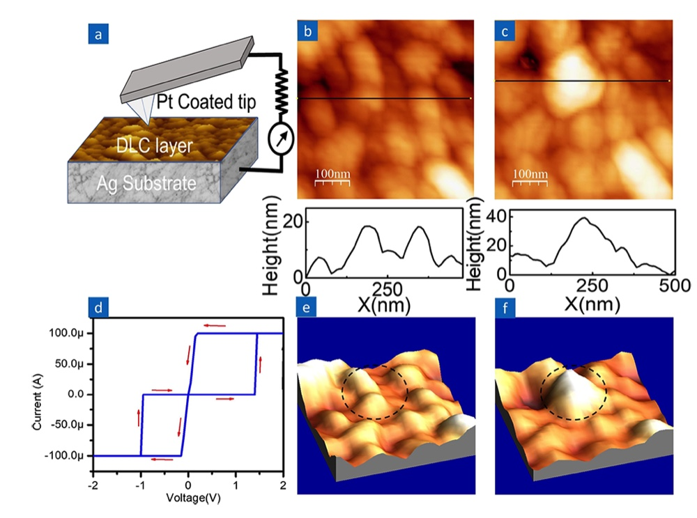
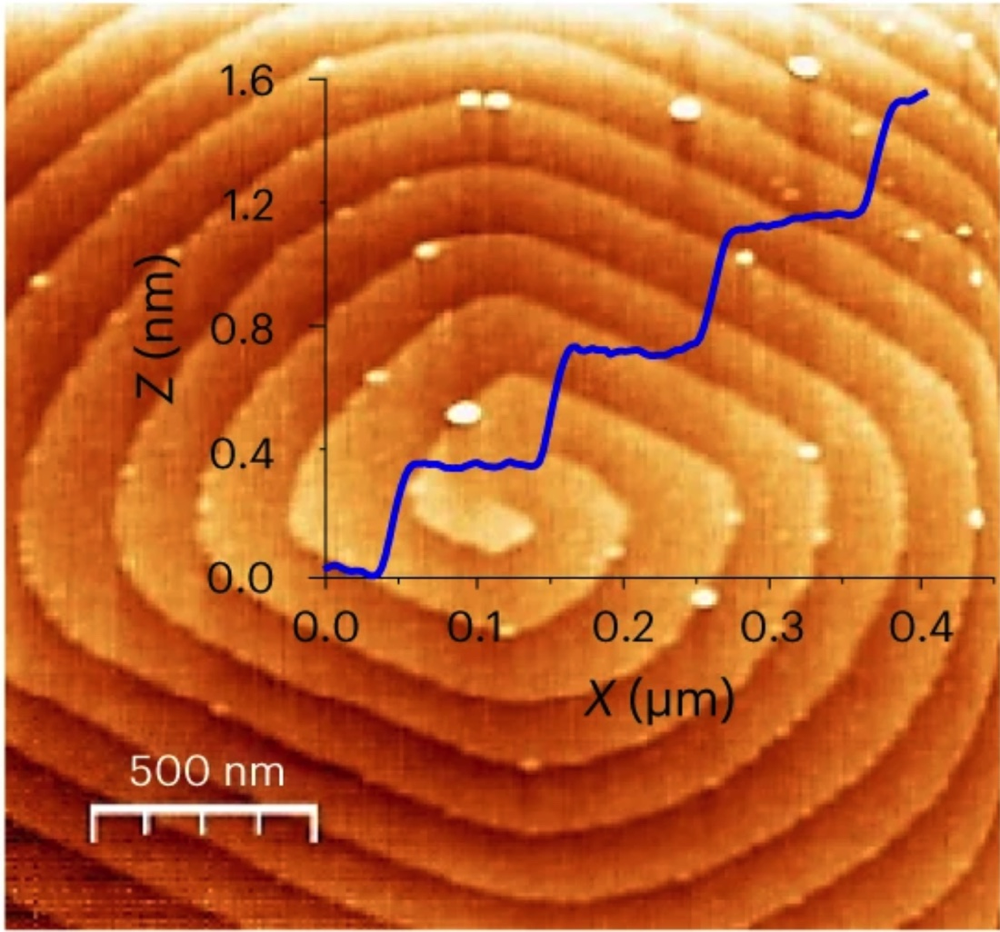
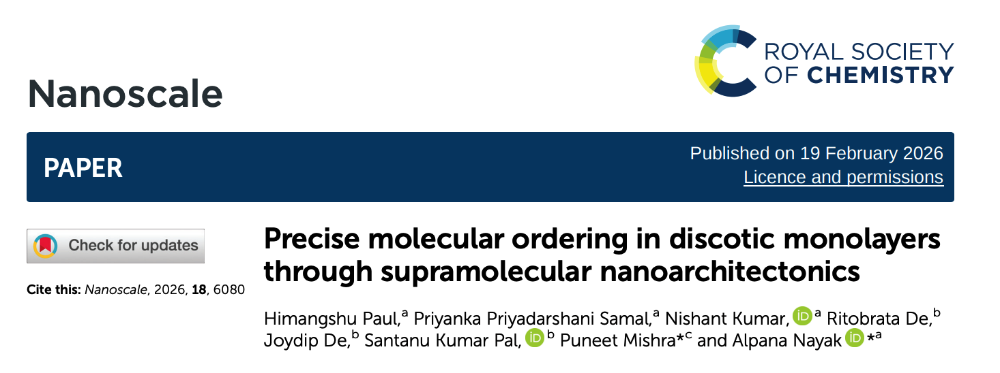

I study how molecular organization at soft interfaces controls mechanical, viscoelastic, and electronic responses, and I investigate the surfaces of 2D materials primarily using Atomic Force Microscopy (AFM). I also fabricate precise molecular monolayers at the air–water interface using the Langmuir technique to explore resistive switching applications, and I study cell mechanics for non-invasive bladder cancer detection.
I am a Postdoctoral Research Scholar at Tufts University. My work combines interfacial self-assembly, quantitative atomic force microscopy, mechanobiology, and nanoscale charge-transport measurements.
Across molecular films, nanoparticles, and living cells, I use the same experimental logic: control structure, measure local response, and test whether the relationship survives rigorous quantitative analysis.
01
Research
Four connected scales
A

Self-assembly at interfaces
Mapping how pressure, temperature, composition, and intermolecular interactions determine order, morphology, elasticity, and surface potential in molecular monolayers.
Highlight: a non-covalent, free-standing molecular monolayer approximately 2 mm across.
B

Nanomechanics & mechanobiology
Using AFM to measure adhesion, deformation, dissipation, elasticity, and surface viscoelasticity in soft materials, nanoparticles, and urinary epithelial cells.
Current focus: robust physical features for non-invasive bladder-cancer research.
C

Molecular electronics
Connecting assembly history and nanoscale structure to local electrical transport using conductive AFM and low-current semiconductor parameter analysis.
Highlight: resistive switching in a non-covalent molecular monolayer.
D

2D materials & molybdenene
Synthesizing and characterizing molybdenene—an atomically thin metallic 2D Dirac material derived from MoS2—and probing its terraced morphology, electronic structure, and energy-storage potential.
Highlight: co-led the microwave-assisted bottom-up synthesis of molybdenene.
02
Publications
Peer-reviewed work
Eleven peer-reviewed articles. Impact factors are reported as listed in the supplied CV.

2026Impact factor 5.1
Precise molecular ordering in discotic monolayers through supramolecular nanoarchitectonics
H. Paul, P. P. Samal, N. Kumar, et al. · Nanoscale 18, 6080–6091
Interaction modes in pressure-induced molecular nanoarchitectonics of the alkylated azobenzene monolayer: interfacial analyses and molecular dynamic simulation
P. P. Samal, S. Erimban, S. Patel, N. Kumar, et al. · Journal of Physical Chemistry C 127, 13256–13265
Influence of Coulombic interaction on the interfacial self-assembly of discotic liquid crystal amphiphiles: a combined experimental and computer simulation study
P. Verma, S. Erimban, N. Kumar, et al. · Journal of Physical Chemistry C 123, 16681–16689